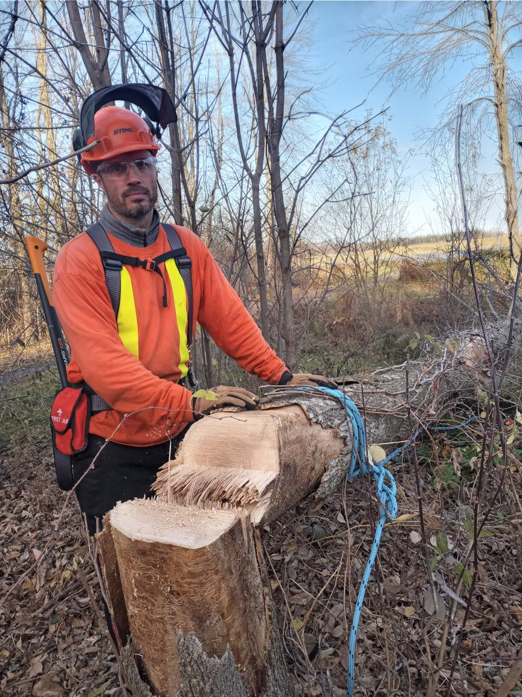
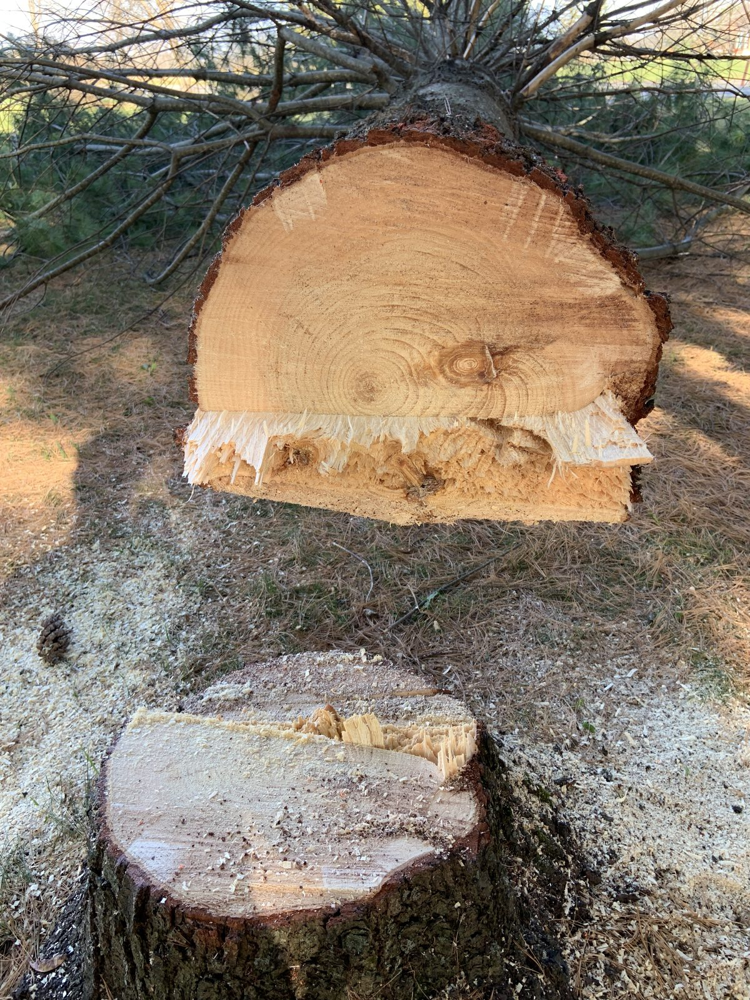
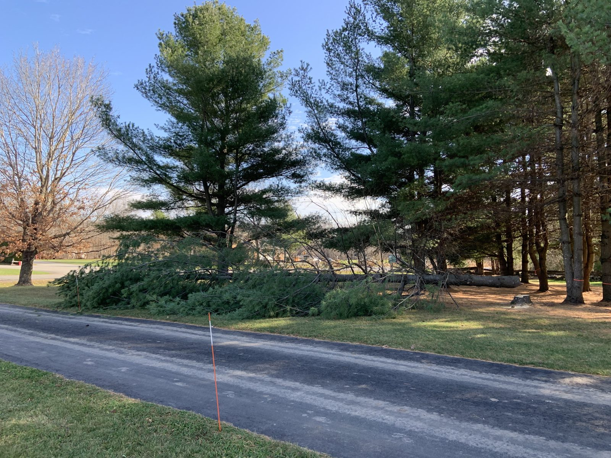
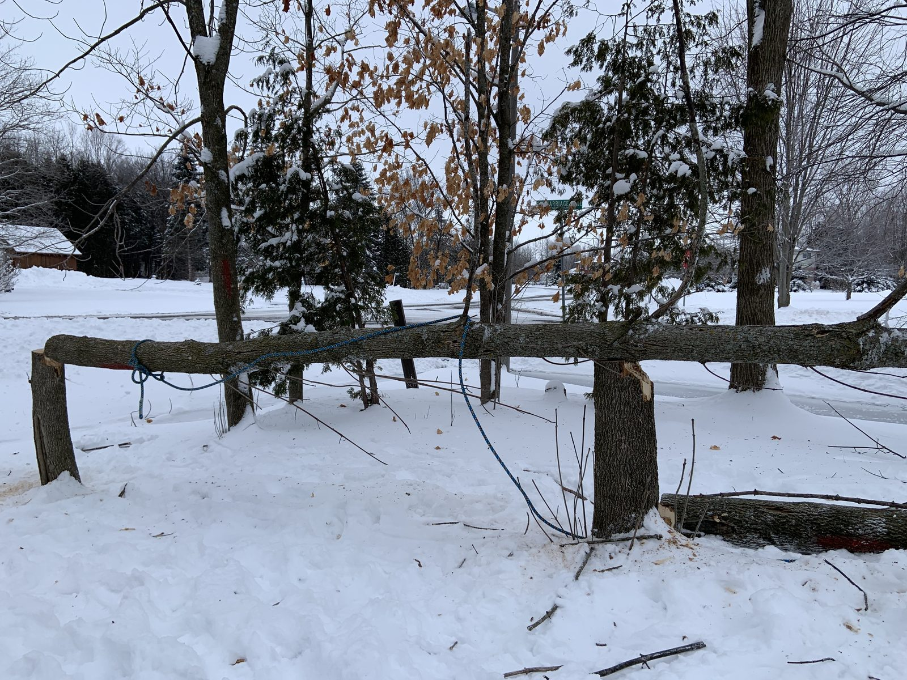

Need a tree down?
Trevor, the Timber Feller, fells leaning, dead and storm-damaged trees safely, in the Madoc and Ottawa areas of Ontario, and across Prince Edward Island.
Text for a quoteText 613-297-0891
Texting is fastest: send the address and photos of all 4 sides of the tree, and you'll get an initial estimate. A site visit comes before the firm quote.

What Timber does
Tree felling
Leaning, dead and storm-damaged trees, brought down where they should land.
Clean-up
Brush and wood cleaned up and hauled away through trusted local vendors, priced into your quote.
Clear quotes
An initial estimate from your photos, then a site visit and a firm written quote before any work starts.
Service areas
- City of Ottawa
- North Dundas
- North Grenville
- Edwardsburgh/Cardinal
- Centre Hastings (Madoc)
- Madoc Township
- Belleville area
- Bancroft
- All of Prince Edward Island
Videos
Short clips of trees Trevor has brought down. Tap one to play it.
More on YouTube: @timberfellerca
Photo Gallery
The newest photos from the job. A new one is added every week.



Get a quote
- Text (fastest): 613-297-0891
- Email: trevor@timberfeller.ca
Give back
Timber also accepts donations to donations@hstf.ca (Interac e-Transfer) in lieu of payment. Tax receipts are not available: HSTF is a not-for-profit, not a registered charity.